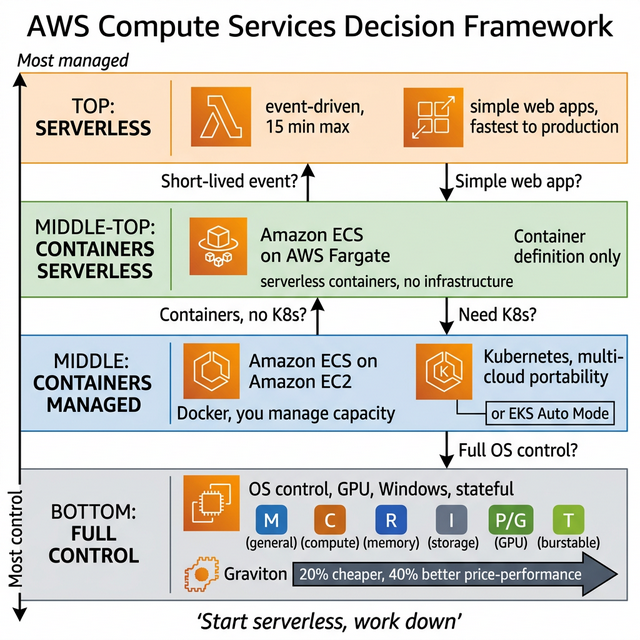
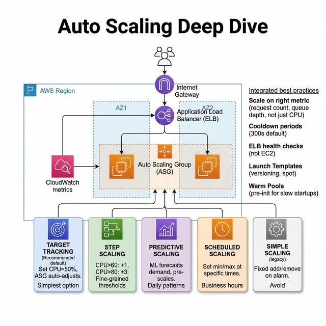
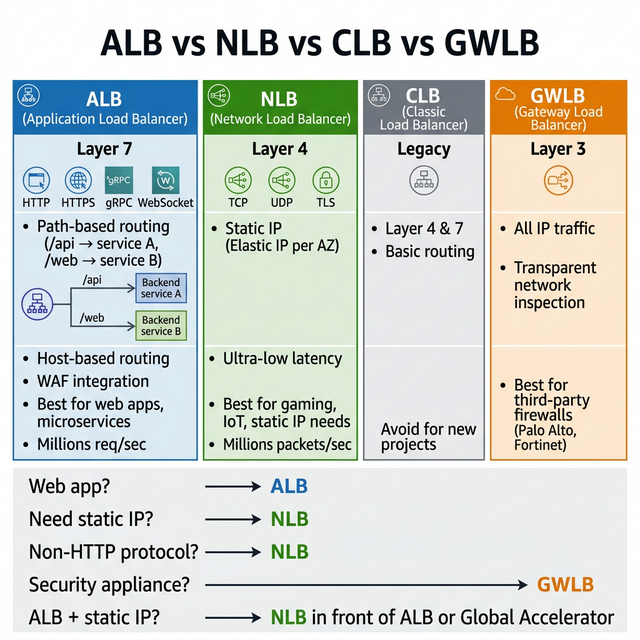
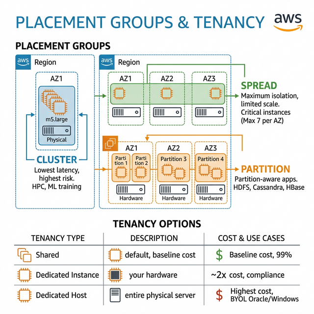

EC2 instance families, ECS vs EKS vs Lambda, Auto Scaling, load balancers,
and placement groups.
5Topics
4Diagrams

Compute — Services Decision Framework
Intermediate
EC2 Instance Types
Know the instance family naming: m5a.xlarge = m (family) 5
(generation) a (AMD) . xlarge (size)
Family
Optimized For
Examples
Use Cases
M (General Purpose)
Balanced compute/memory
m7g, m6i, m5
Web servers, app servers, small DBs
C (Compute)
High CPU performance
c7g, c6i, c5
Batch processing, ML inference, gaming servers
R (Memory)
High memory-to-CPU ratio
r7g, r6i, r5
In-memory caches, real-time analytics, SAP HANA
I (Storage)
High sequential read/write
i4i, i3
Data warehouses, distributed file systems
P/G (Accelerated)
GPU compute
p5, g5, inf2
ML training, video encoding, 3D rendering
T (Burstable)
Burst CPU when needed
t3, t4g
Dev/test, low-traffic web servers, micro-services
Graviton (ARM) — The Cost Optimizer
20% cheaper than x86 equivalent (m7g vs m7i)
40% better price-performance — most workloads run faster AND
cheaper
Suffix "g" — m7g, c7g, r7g are Graviton-based
Compatibility: Linux, containers (Docker/EKS), most languages
work out of the box. Not for Windows workloads.
🎯 Key Takeaway
Interview tip:"I default to Graviton instances (m7g, c7g)
for 20% cost savings. For burstable workloads like dev/test, T3 instances
with CPU credits. For memory-intensive like ElastiCache, R-family. I always
check Compute Optimizer for right-sizing recommendations."
Advanced
Compute Decision Framework
The #1 question: "When would you use EC2 vs ECS vs EKS vs Lambda vs Fargate?"
Service
You Manage
AWS Manages
Best For
Max Duration
EC2
OS, runtime, scaling, patching
Hardware
Full control, GPU, Windows, stateful
Unlimited
ECS on EC2
EC2 instances, capacity
Container orchestration
Teams comfortable with Docker, not K8s
Unlimited
ECS on Fargate
Container definition only
Infrastructure, scaling
Serverless containers, predictable tasks
Unlimited
EKS
K8s config, nodes (or Auto Mode)
K8s control plane
Multi-cloud portability, K8s ecosystem
Unlimited
Lambda
Function code only
Everything
Event-driven, short tasks, APIs
15 minutes
App Runner
Container image or source code
Build, deploy, scale, LB
Simple web apps, fastest path to production
Unlimited
Decision Tree
Short-lived event processing (<15 min)? → Lambda
Simple web app, minimal ops? → App Runner
Containers, no Kubernetes expertise? → ECS on Fargate
Containers, need K8s or multi-cloud? → EKS (Auto Mode for
managed)
Full OS control, GPU, Windows? → EC2
🎯 Key Takeaway
Interview tip:"I start from serverless and work down:
Lambda for event-driven, Fargate for containerized workloads without
managing infrastructure, EKS for teams already invested in Kubernetes. EC2
only when I need full OS control, specific instance types (GPU), or Windows.
The trend is moving UP the stack — less infra management."
Intermediate
Auto Scaling Deep Dive

Policy Type
How It Works
Best For
Target Tracking
Set target (e.g., CPU = 50%), ASG adjusts to maintain
Default — simplest, handles most cases
Step Scaling
Different actions at different thresholds (CPU >60: +1, >80: +3)
Fine-grained control, gradual responses
Simple Scaling
Add/remove fixed number on alarm
Legacy — use step or target tracking instead
Scheduled Scaling
Set min/max at specific times
Predictable patterns (business hours, events)
Predictive Scaling
ML forecasts demand, pre-scales
Recurring patterns (daily traffic spikes)
Scaling Best Practices
Scale on the right metric — CPU is not always best. Use custom
metrics: request count per target, queue depth (SQS), custom latency.
Cooldown periods — Default 300 seconds. Prevents thrashing. Set
shorter for fast-scaling apps.
Health checks — Use ELB health checks (not just EC2 status). An
instance can be "running" but app is crashed.
Warm pools — Pre-initialize instances for faster scaling
(useful for apps with long startup times).
🎯 Key Takeaway
Interview tip:"I use Target Tracking as my default scaling
policy (e.g., CPU at 50%), combined with Predictive Scaling for apps with
daily patterns. For SQS-driven workloads, I scale on
ApproximateNumberOfMessagesVisible. I always use ELB health checks over EC2
status checks — and warm pools if the app takes minutes to start."
Intermediate
ALB vs NLB vs CLB vs GWLB

Feature
ALB
NLB
CLB (Legacy)
GWLB
Layer
Layer 7 (HTTP/HTTPS)
Layer 4 (TCP/UDP/TLS)
Layer 4 & 7
Layer 3 (IP)
Protocol
HTTP, HTTPS, gRPC, WebSocket
TCP, UDP, TLS
HTTP, TCP
All IP traffic
Performance
Millions of req/sec
Millions of packets/sec, static IP
Limited
Transparent
Routing
Path, host, header, query string, source IP
Port-based only
Basic
N/A
Static IP
❌ (use Global Accelerator)
✅ Elastic IP per AZ
❌
❌
Best For
Web apps, microservices, API routing
Ultra-low latency, IoT, gaming, static IP
Avoid (legacy)
Third-party firewalls (Palo Alto)
When to Use What
Web application? → ALB (path-based routing to different
services)
Need static IP / whitelisting? → NLB (Elastic IP per AZ)
ALB + static IP? → NLB in front of ALB, or use Global
Accelerator
🎯 Key Takeaway
Interview tip:"ALB for 95% of web workloads — it does
path-based routing, host-based routing, and integrates with WAF. NLB for
TCP/UDP workloads or when I need static IPs (firewall whitelisting). Never
CLB for new projects. If I need ALB features + static IP, I put a NLB in
front of ALB."
Advanced
Placement Groups & Tenancy

Type
How
Use Case
Trade-off
Cluster
All instances on same rack (same AZ)
HPC, ML training, low-latency inter-node communication
If rack fails, all fail
Spread
Each instance on different hardware (max 7/AZ)
Critical instances that must be isolated
Limited to 7 per AZ
Partition
Instances grouped into partitions on separate racks
HDFS, HBase, Cassandra (partition-aware)
Must configure partition awareness
Tenancy Options
Tenancy
What
Cost
Use Case
Shared (default)
Hardware shared with other customers
Baseline
99% of workloads
Dedicated Instance
Your instances on dedicated hardware (may share with your other
instances)
~2x
Compliance requiring physical isolation
Dedicated Host
Entire physical server is yours
Highest
License compliance (per-socket, per-core licenses like Oracle, Windows
Server)
🎯 Key Takeaway
Interview tip:"Cluster placement for low-latency HPC (all
on same rack), Spread placement for critical instances that need hardware
isolation (max 7/AZ), Partition for distributed systems like Cassandra that
are partition-aware. Dedicated Hosts specifically for bring-your-own-license
scenarios."
Advanced
Interview Questions — Compute
Compute is the backbone of every architecture. These questions test your ability to pick the right compute model and design for scale.
Your application gets 10x traffic every Black Friday (from 1,000 to 10,000 requests/second). Design the auto-scaling strategy. Would you use reactive scaling, predictive scaling, or both?
Answer Guide
Predictive scaling (pre-warm capacity before the event), target tracking for steady-state, and warm pools for fast instance launch. Combine with Spot Instances for cost savings on fault-tolerant tiers.
Compare EC2, ECS on Fargate, EKS, and Lambda for a batch processing workload that runs for 20 minutes every hour. Which would you choose and why?
Answer Guide
ECS on Fargate (no infrastructure management, pay per task, supports long-running tasks). Lambda has a 15-minute limit so it's out. EC2 wastes money idling 40 min/hr. EKS is overkill for a single batch job.
Explain Spot Instances. Your ML training job takes 6 hours. How would you use Spot to save 70-90% while handling the 2-minute interruption warning?
Answer Guide
Use checkpointing (save model state to S3 every N minutes). Diversify across 4+ instance types/AZs. Use Spot Fleet or mixed instance ASG. On interruption signal, save checkpoint and terminate gracefully.
When would you choose an NLB over an ALB? A team is using ALB for a gRPC service and experiencing high latency. What's the issue?
Answer Guide
ALB operates at Layer 7 (HTTP/HTTPS). NLB operates at Layer 4 (TCP/UDP) with ultra-low latency. gRPC uses HTTP/2 — ALB supports it, but NLB with TLS passthrough may have lower overhead. Also consider: NLB supports static IPs.
You need to run an HPC (High-Performance Computing) simulation that requires low-latency, high-bandwidth communication between 50 instances. Which placement group would you use and why?
Answer Guide
Cluster placement group — packs instances on the same rack for lowest latency and 25 Gbps throughput between instances. Trade-off: if the rack fails, all instances fail. Use EFA (Elastic Fabric Adapter) for HPC networking.
Your organization has Oracle database licenses that require per-socket, per-core licensing. How do you run them on AWS while staying compliant?
Answer Guide
Dedicated Hosts — you control the physical server, can track sockets/cores for licensing. Dedicated Instances don't give you host-level visibility. Also consider: AWS License Manager for tracking.
An application on EC2 has a cold start problem — new instances take 8 minutes to fully initialize (download config, warm caches, JVM warmup). During scaling events, users see errors. How do you fix it?
Answer Guide
Auto Scaling warm pools (pre-initialized instances in stopped state, launch in seconds). Also consider: golden AMIs (bake dependencies into the image), lifecycle hooks (delay traffic until health check passes).
A startup is choosing between ECS and EKS. They have a team of 3 developers, 8 microservices, and no Kubernetes experience. What do you recommend?
Answer Guide
ECS on Fargate — simpler, fully managed, no cluster management. EKS adds operational complexity (control plane upgrades, node management, K8s expertise required). ECS is sufficient until they need K8s-specific features (service mesh, CRDs, multi-cloud).
Explain cross-zone load balancing. An ALB has 10 targets in us-east-1a and 2 targets in us-east-1b. How is traffic distributed with cross-zone enabled vs disabled?
Answer Guide
Enabled: traffic distributed evenly across all 12 targets (each gets ~8.3%). Disabled: each AZ gets 50% — so 1a targets get 5% each, 1b targets get 25% each (overloaded). ALB enables cross-zone by default (free). NLB charges for cross-zone.
Your company wants to save money on compute. Currently running 100 m5.xlarge instances 24/7. 60% have steady-state usage, 30% are dev/test (business hours only), and 10% are batch processing. Design the purchasing strategy.
Answer Guide
60 instances → Compute Savings Plans (1yr, up to 66% off). 30 dev/test → scheduled scaling (stop nights/weekends) + On-Demand. 10 batch → Spot Instances (up to 90% off). Consider Graviton (m7g) for additional 20% savings.
Preparation Strategy
Compute questions test your ability to match the right tool to the workload. Always start with: "What are the workload characteristics?" — duration, traffic pattern, fault tolerance, compliance requirements. The answer follows from the constraints.